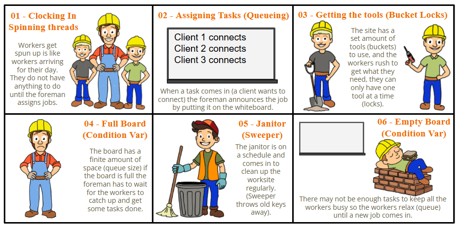

April 2026 – May 2026

Mini-KV is a multi-threaded, in-memory key-value store server built in C for CprE 3080
(Operating Systems). Inspired by real-world systems like Redis and Memcached, the server
handles concurrent TCP clients using a fixed thread pool, stores data in a chained hash table
protected by reader-writer locks, and reclaims expired entries via a background sweeper thread.
GitHub:
github.com/jreiff627/minikv
The goal of Mini-KV was to compose core OS primitives: TCP sockets, thread pools, mutexes, condition variables, and reader-writer locks; into a working, concurrent network service. The server accepts line-delimited text commands (GET, PUT, DEL, STATS, QUIT) over TCP and responds with structured output, including optional TTL-based key expiration.
pthread_rwlock_t for correct concurrent accesspthread_rwlock_t: read-locked for GET, write-locked for PUT/DELstdatomic.h for lock-free stat trackingbench_client.c) for throughput testing with configurable read/write ratiosLock Granularity
I used a single table-wide reader-writer lock rather than per-bucket locks. This simplified
implementation significantly and avoided lock-ordering bugs. Under the 90% read workload
used in benchmarking, concurrent GETs ran in parallel effectively. The tradeoff is that
write operations (PUT/DEL) block the entire table — bucket-level locking would improve
write throughput at the cost of added complexity.
Worker Pool Sizing
Benchmarking with 1, 4, 8, and 16 workers showed throughput scaling well up to the core
count of the test machine, then plateauing. Beyond that point, context switching and
lock contention on the work queue offset the gains from additional threads.
Sweeper Coordination
The sweeper acquires the write lock per-bucket rather than for the entire sweep pass,
reducing the window during which all readers are blocked. This prevents the sweeper
from freezing the server during large table scans while still guaranteeing consistent
deletion.
pthreads)-Wall -Wextra -pthreadMini-KV bridges the gap between OS theory and real-world systems engineering. Building a Redis-style server from scratch: handling concurrent clients, managing shared state safely, and coordinating background threads; gave me hands-on experience with the exact primitives used in production infrastructure. This project demonstrates that my engineering skills extend beyond hardware and firmware into robust software systems design.
Here's an analogy-based breakdown of how the concurrent architecture works under the hood:
